How to basic: bar plots
This blog post shows how to make bar plots and area charts. It’s mostly a list of recipes, indented for myself. These are plots I have often to do in reports and would like to have the code handy somewhere. Maybe this will be helpful to some of you as well. Actually, this post is exactly how I started my blog post. I wanted to have a repository of recipes, and with time the blog grew to what it is now (tutorials and me exploring methods and datasets with R).
Bar charts
Bar charts are quite simple plots, but there are enough variations of them that they deserve one single blog post. However, don’t expect many explanations.
Let’s first start by loading some data, and the usually required packages:
library(tidyverse)
library(lubridate)
library(janitor)
library(colorspace)data(gss_cat)Very often, what one wants to show are counts:
gss_cat %>%
count(marital, race)## # A tibble: 18 x 3
## marital race n
## * <fct> <fct> <int>
## 1 No answer Other 2
## 2 No answer Black 2
## 3 No answer White 13
## 4 Never married Other 633
## 5 Never married Black 1305
## 6 Never married White 3478
## 7 Separated Other 110
## 8 Separated Black 196
## 9 Separated White 437
## 10 Divorced Other 212
## 11 Divorced Black 495
## 12 Divorced White 2676
## 13 Widowed Other 70
## 14 Widowed Black 262
## 15 Widowed White 1475
## 16 Married Other 932
## 17 Married Black 869
## 18 Married White 8316Let’s lump marital statuses that appear less than 10% of the time into an “Other” category:
(
counts_marital_race <- gss_cat %>%
mutate(marital = fct_lump(marital, prop = 0.1)) %>%
count(marital, race)
)## # A tibble: 12 x 3
## marital race n
## * <fct> <fct> <int>
## 1 Never married Other 633
## 2 Never married Black 1305
## 3 Never married White 3478
## 4 Divorced Other 212
## 5 Divorced Black 495
## 6 Divorced White 2676
## 7 Married Other 932
## 8 Married Black 869
## 9 Married White 8316
## 10 Other Other 182
## 11 Other Black 460
## 12 Other White 1925The simplest bar plot:
ggplot(counts_marital_race) +
geom_col(aes(x = marital, y = n, fill = race)) +
scale_fill_discrete_qualitative(palette = "Dark 3") +
brotools::theme_blog()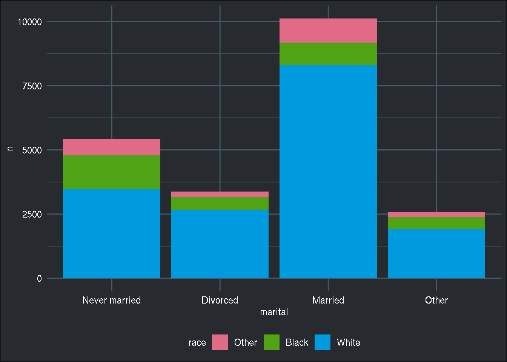
Now with position = "dodge":
ggplot(counts_marital_race) +
geom_col(aes(x = marital, y = n, fill = race), position = "dodge") +
scale_fill_discrete_qualitative(palette = "Dark 3") +
brotools::theme_blog()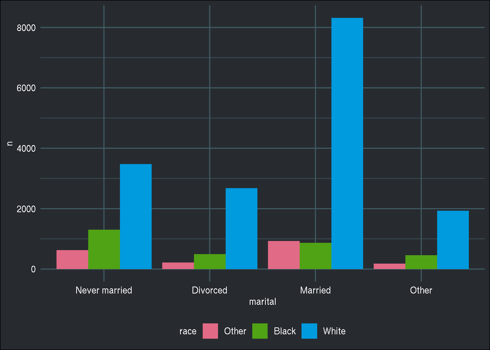
Moving the legend around with theme(legend.position = …):
ggplot(counts_marital_race) +
geom_col(aes(x = marital, y = n, fill = race), position = "dodge") +
scale_fill_discrete_qualitative(palette = "Dark 3") +
brotools::theme_blog() +
theme(legend.position = "left")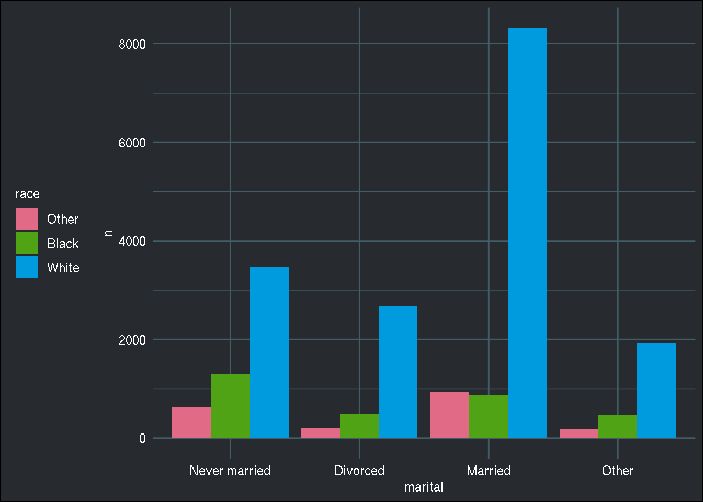
Counting by year as well:
(
counts_marital_race_year <- gss_cat %>%
mutate(marital = fct_lump(marital, prop = 0.1)) %>%
count(year, marital, race) %>%
ungroup()
)## # A tibble: 96 x 4
## year marital race n
## * <int> <fct> <fct> <int>
## 1 2000 Never married Other 60
## 2 2000 Never married Black 157
## 3 2000 Never married White 495
## 4 2000 Divorced Other 20
## 5 2000 Divorced Black 60
## 6 2000 Divorced White 361
## 7 2000 Married Other 78
## 8 2000 Married Black 121
## 9 2000 Married White 1079
## 10 2000 Other Other 17
## # … with 86 more rowsWhen you want to show how a variable evolves through time, area chart are handy:
counts_marital_race_year %>%
group_by(year, marital) %>%
summarise(n = sum(n)) %>%
ggplot() +
geom_area(aes(x = year, y = n, fill = marital)) +
scale_fill_discrete_qualitative(palette = "Dark 3") +
brotools::theme_blog() 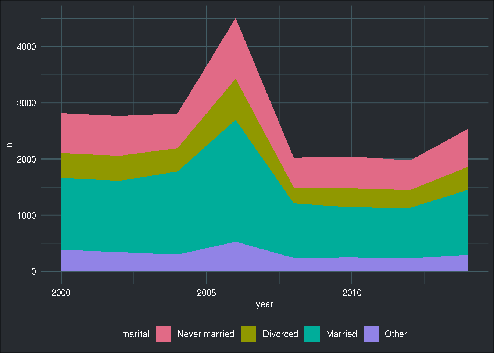
Now with facets:
counts_marital_race_year %>%
ggplot() +
geom_area(aes(x = year, y = n, fill = marital)) +
facet_wrap(facets = vars(race), ncol = 1) +
scale_fill_discrete_qualitative(palette = "Dark 3") +
brotools::theme_blog() 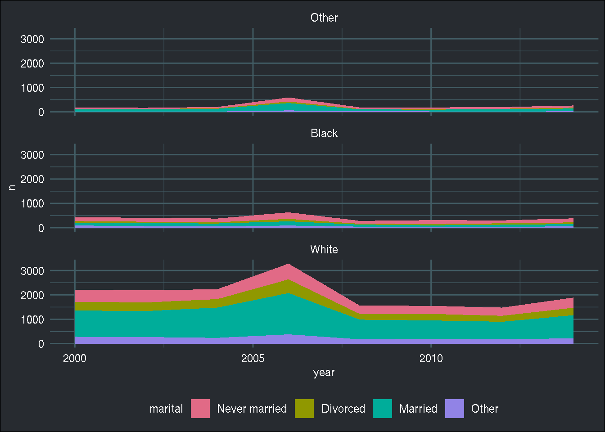
But what if I want each plot to have its own y axis?
counts_marital_race_year %>%
ggplot() +
geom_area(aes(x = year, y = n, fill = marital)) +
facet_wrap(facets = vars(race), ncol = 1, scales = "free_y") +
scale_fill_discrete_qualitative(palette = "Dark 3") +
brotools::theme_blog() 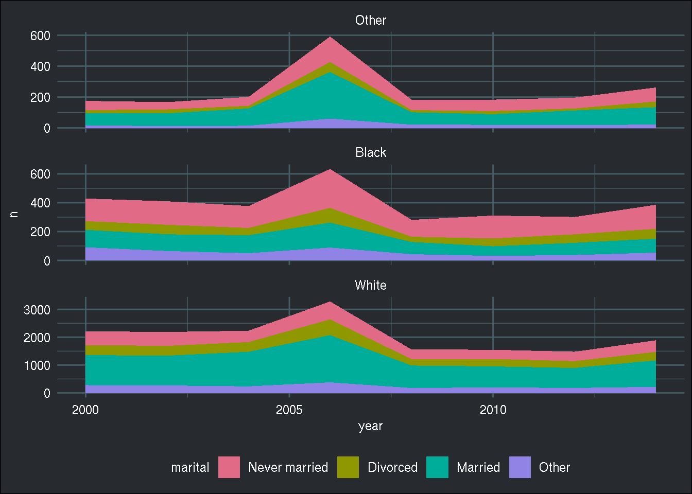
Now doing an area chart but with relative frequencies:
counts_marital_race_year %>%
group_by(year, marital) %>%
summarise(n = sum(n)) %>%
mutate(freq = n/sum(n)) %>%
ggplot() +
geom_area(aes(x = year, y = freq, fill = marital)) +
scale_fill_discrete_qualitative(palette = "Dark 3") +
brotools::theme_blog() 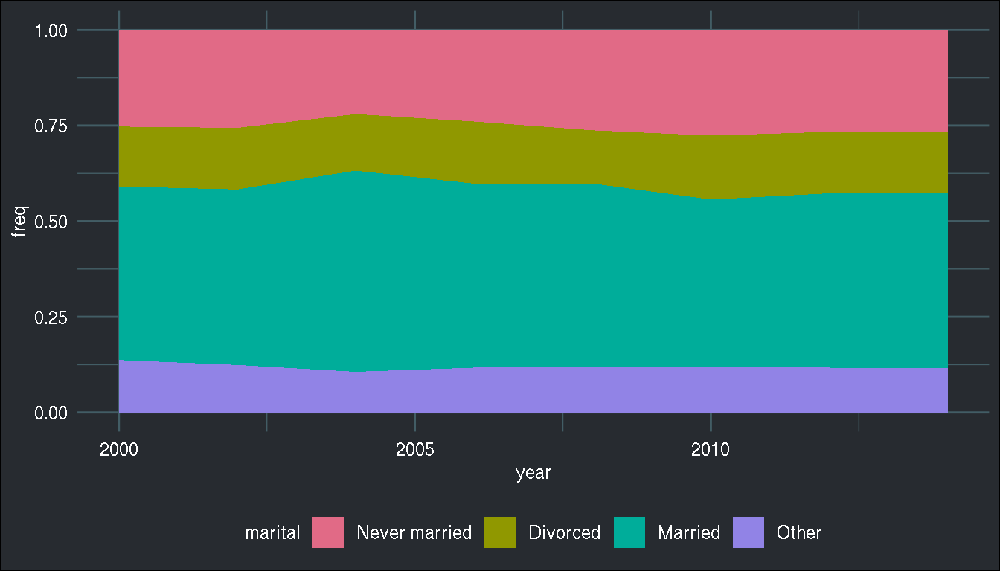
With facet_wrap():
counts_marital_race_year %>%
group_by(race, year, marital) %>%
summarise(n = sum(n)) %>%
mutate(freq = n/sum(n)) %>%
ggplot() +
geom_area(aes(x = year, y = freq, fill = marital)) +
facet_wrap(facets = vars(race), ncol = 1, scales = "free_y") +
scale_fill_discrete_qualitative(palette = "Dark 3") +
brotools::theme_blog() 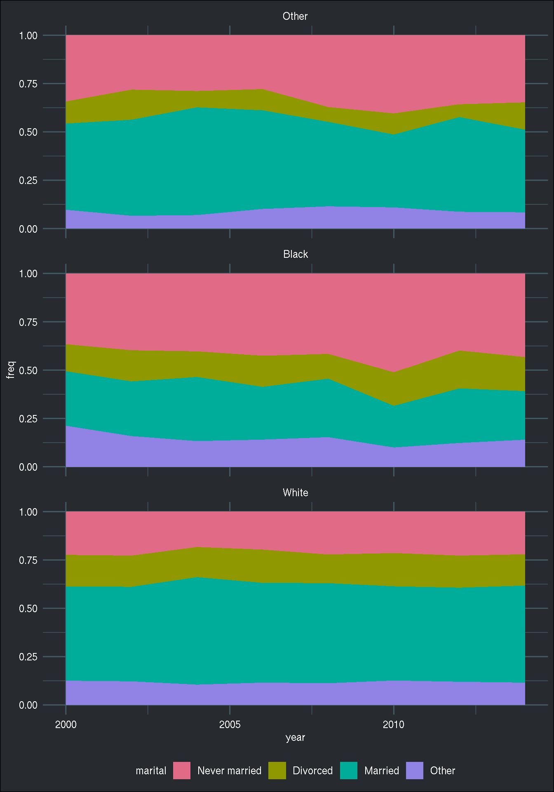
Want to replace 2000 with “2000-01-01”? First need to create vector of prettier dates and positions:
pretty_dates <- counts_marital_race_year %>%
mutate(pretty_dates = paste0(year, "-01-01")) %>%
pull(pretty_dates) %>%
unique()
position_dates <- counts_marital_race_year %>%
pull(year) %>%
unique() %>%
sort()
scale_x_continuous() can now use this. Using guide = guide_axis(n.dodge = 2) to avoid overlapping labels:
counts_marital_race_year %>%
group_by(race, year, marital) %>%
summarise(n = sum(n)) %>%
mutate(freq = n/sum(n)) %>%
ggplot() +
geom_area(aes(x = year, y = freq, fill = marital)) +
facet_wrap(facets = vars(race), ncol = 1, scales = "free_y") +
scale_x_continuous("Year of survey", labels = pretty_dates,
breaks = position_dates, guide = guide_axis(n.dodge = 2)) +
scale_fill_discrete_qualitative(palette = "Dark 3") +
brotools::theme_blog() 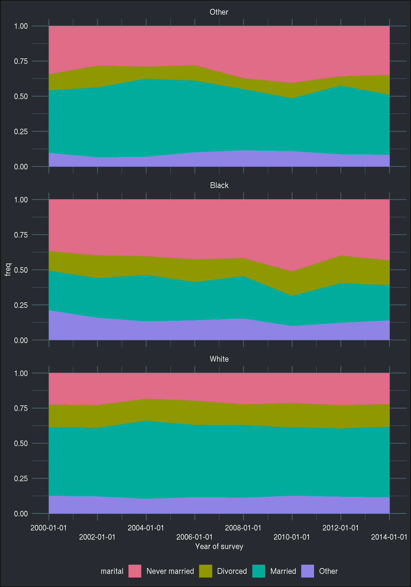
Adding labels is not trivial. Here it is not working:
counts_marital_race_year %>%
group_by(race, year, marital) %>%
summarise(n = sum(n)) %>%
mutate(freq = n/sum(n)) %>%
ggplot() +
geom_area(aes(x = year, y = freq, fill = marital)) +
facet_wrap(facets = vars(race), ncol = 1, scales = "free_y") +
scale_x_continuous("Year of survey", labels = pretty_dates,
breaks = position_dates, guide = guide_axis(n.dodge = 2)) +
geom_label(aes(x = year, y = freq, label = round(100 * freq))) +
scale_fill_discrete_qualitative(palette = "Dark 3") +
brotools::theme_blog() 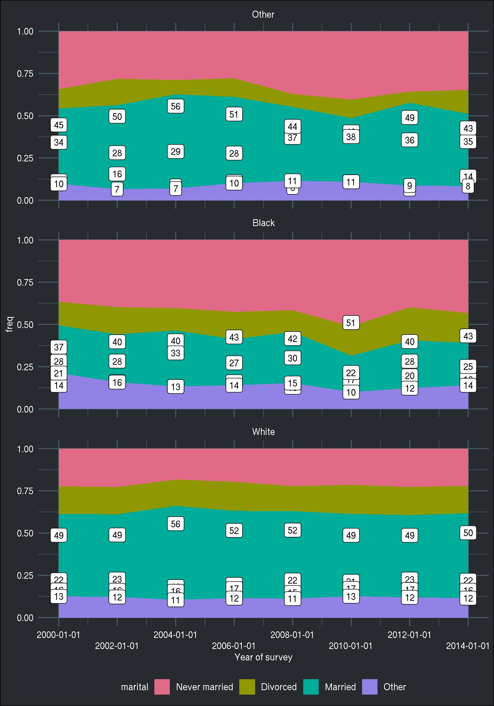
Another failed attempt. I leave it here for posterity. My first idea was first to sort the grouped data set by descending frequency, and then to reorder the factor variable marital by descending position, which is the cumulative percentage. This would work fine, if the same factor levels would have had the same order for each of the race categories. However, this is not the case. For blacks, the most frequent category is “Never Married”. As you can see below, this trick worked well for 2 categories out of 3:
counts_marital_race_year %>%
group_by(race, year, marital) %>%
summarise(n = sum(n)) %>%
mutate(freq = n/sum(n)) %>%
group_by(year, race) %>%
arrange(desc(freq)) %>%
mutate(position = cumsum(freq)) %>%
mutate(marital = fct_reorder(marital, desc(position))) %>%
ggplot() +
geom_area(aes(x = year, y = freq, fill = marital)) +
facet_wrap(facets = vars(race), ncol = 1, scales = "free") +
scale_x_continuous("Year of survey", labels = pretty_dates,
breaks = position_dates, guide = guide_axis(n.dodge = 2)) +
geom_label(aes(x = year, y = position, label = round(100 * freq))) +
scale_fill_discrete_qualitative(palette = "Dark 3") +
brotools::theme_blog() 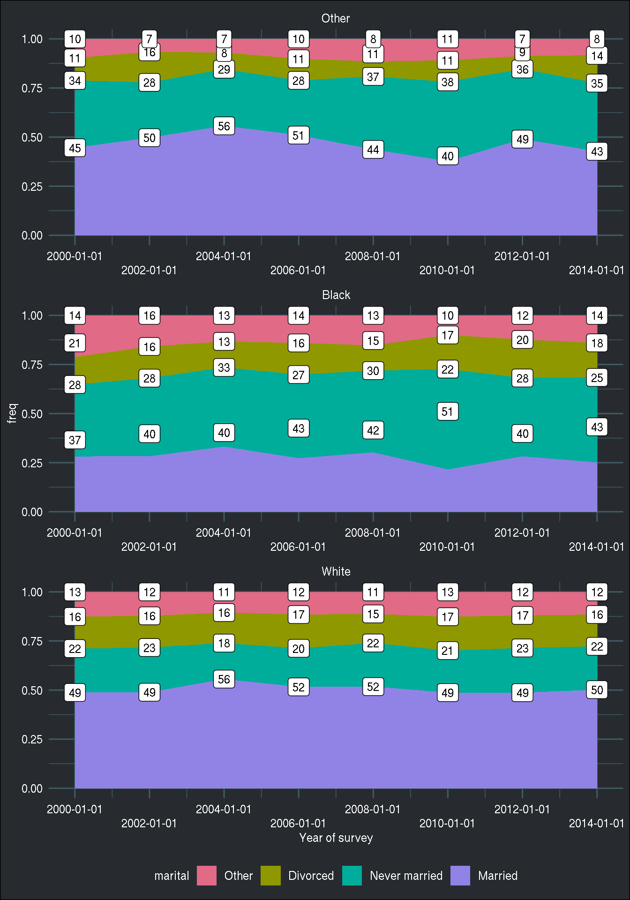
So to remedy this, is not reorder too early; first, we need to reorder the factor variable by frequency. Then, we arrange the data by the now reordered marital variable, and then we can compute the position using the cumulative frequency.
counts_marital_race_year %>%
group_by(race, year, marital) %>%
summarise(n = sum(n)) %>%
mutate(freq = n/sum(n)) %>%
group_by(year, race) %>%
mutate(marital = fct_reorder(marital, freq)) %>%
arrange(desc(marital)) %>%
mutate(position = cumsum(freq)) %>%
ggplot() +
geom_area(aes(x = year, y = freq, fill = marital)) +
facet_wrap(facets = vars(race), ncol = 1, scales = "free") +
scale_x_continuous("Year of survey", labels = pretty_dates,
breaks = position_dates, guide = guide_axis(n.dodge = 2)) +
geom_label(aes(x = year, y = position, label = round(100 * freq))) +
scale_fill_discrete_qualitative(palette = "Dark 3") +
brotools::theme_blog()
We can place the labels a bit better (in the middle of their respective areas), like so:
counts_marital_race_year %>%
group_by(race, year, marital) %>%
summarise(n = sum(n)) %>%
mutate(freq = n/sum(n)) %>%
group_by(year, race) %>%
mutate(marital = fct_reorder(marital, freq)) %>%
arrange(desc(marital)) %>%
mutate(position = cumsum(freq)) %>% mutate(prev_pos = lag(position, default = 0)) %>%
mutate(position = (position + prev_pos)/2) %>%
ggplot() +
geom_area(aes(x = year, y = freq, fill = marital)) +
facet_wrap(facets = vars(race), ncol = 1, scales = "free") +
scale_x_continuous("Year of survey", labels = pretty_dates,
breaks = position_dates, guide = guide_axis(n.dodge = 2)) +
geom_label(aes(x = year, y = position, label = round(100 * freq))) +
scale_fill_discrete_qualitative(palette = "Dark 3") +
brotools::theme_blog() 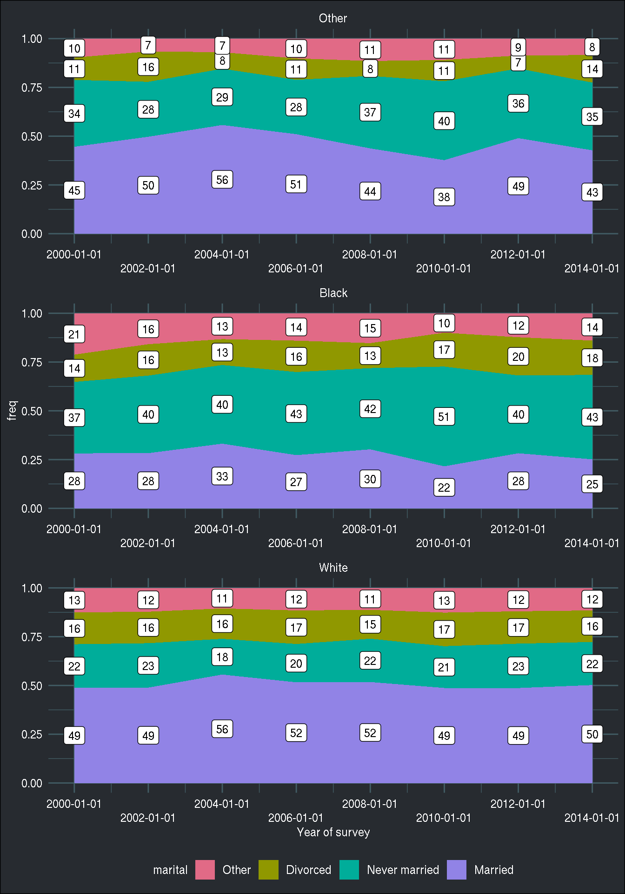
Now let’s focus on the variable tvhours. We want to show the total watched hours, but also the total across all the categories of race and marital in a faceted bar plot:
(
total_tv <- gss_cat %>%
group_by(year, race, marital) %>%
summarise(total_tv = sum(tvhours, na.rm = TRUE))
)## # A tibble: 127 x 4
## # Groups: year, race [24]
## year race marital total_tv
## <int> <fct> <fct> <int>
## 1 2000 Other No answer 2
## 2 2000 Other Never married 103
## 3 2000 Other Separated 16
## 4 2000 Other Divorced 17
## 5 2000 Other Widowed 24
## 6 2000 Other Married 122
## 7 2000 Black Never married 452
## 8 2000 Black Separated 135
## 9 2000 Black Divorced 156
## 10 2000 Black Widowed 183
## # … with 117 more rows
This tibble has the total watched hours by year, race and marital status variables. How to add the total by year and race categories? For this, by are first going to use the group_split():
total_tv_split <- total_tv %>%
select(race, year, marital, total_tv) %>%
mutate(year = as.character(year)) %>%
group_split(year, race)## Warning: ... is ignored in group_split(<grouped_df>), please use
## group_by(..., .add = TRUE) %>% group_split()
I have to re-order the columns with select(), because when using janitor::adorn_totals(), which I will be using below to add totals, the first column must be a character column (it serves as an identifier column).
This creates a list with 3 races times 6 years, so 24 elements. Each element of the list is a tibble with each unique combination of year and race:
length(total_tv_split)## [1] 24total_tv_split[1:2]## <list_of<
## tbl_df<
## race : factor<f4a07>
## year : character
## marital : factor<82ceb>
## total_tv: integer
## >
## >[2]>
## [[1]]
## # A tibble: 6 x 4
## race year marital total_tv
## <fct> <chr> <fct> <int>
## 1 Other 2000 No answer 2
## 2 Other 2000 Never married 103
## 3 Other 2000 Separated 16
## 4 Other 2000 Divorced 17
## 5 Other 2000 Widowed 24
## 6 Other 2000 Married 122
##
## [[2]]
## # A tibble: 5 x 4
## race year marital total_tv
## <fct> <chr> <fct> <int>
## 1 Black 2000 Never married 452
## 2 Black 2000 Separated 135
## 3 Black 2000 Divorced 156
## 4 Black 2000 Widowed 183
## 5 Black 2000 Married 320
Why do this? To use janitor::adorn_totals(), which adds row-wise totals to a data frame, or to each data frame if a list of data frames gets passed to it. I need to still transform the data a little bit. After using adorn_totals(), I bind my list of data frames together, and then fill down the year column (when using adorn_totals(), character columns like year are filled with "-", but I chose to fill it with NA_character_). I then replace the NA value from the marital column with the string "Total" and then reorder the marital column by value of total_tv:
total_tv_split <- total_tv_split %>%
adorn_totals(fill = NA_character_) %>%
map(as.data.frame) %>%
bind_rows() %>%
fill(year, .direction = "down") %>%
mutate(marital = ifelse(is.na(marital), "Total", marital)) %>%
mutate(marital = fct_reorder(marital, total_tv))
I can finally create my plot. Because I have added “Total” as a level in the marital column, it now appears seamlessly in the plot:
ggplot(total_tv_split) +
geom_col(aes(x = marital, y = total_tv, fill = race)) +
facet_wrap(facets = vars(year), nrow = 2) +
scale_fill_discrete_qualitative(palette = "Dark 3") +
scale_x_discrete(guide = guide_axis(n.dodge = 3)) +
brotools::theme_blog() 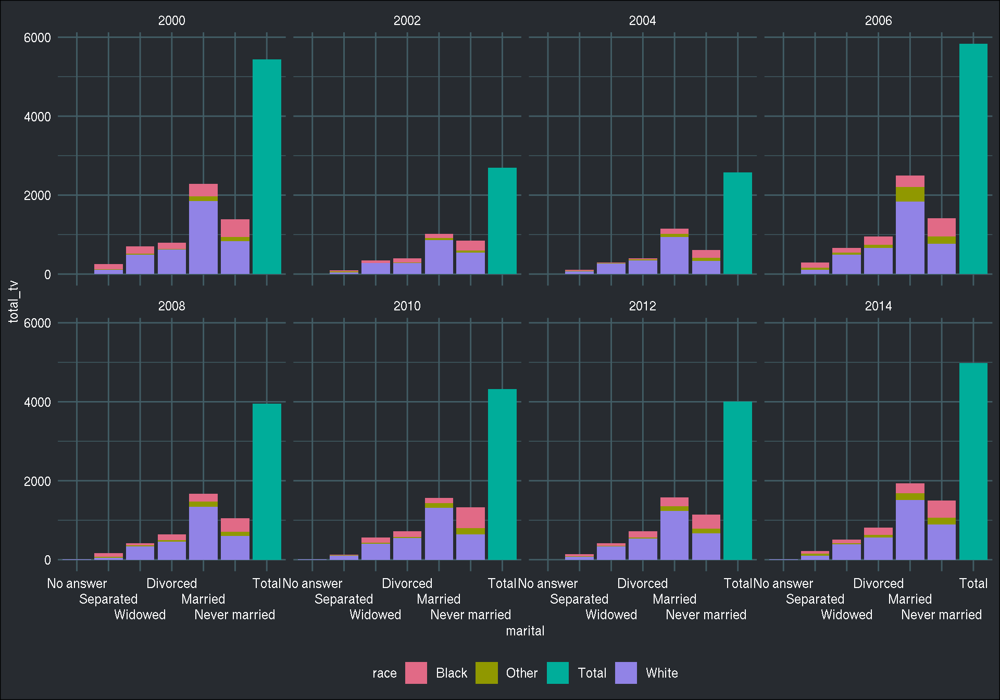
To finish this list of recipes, let’s do a pyramid plot now (inspiration from here:
data_pyramid <- gss_cat %>%
filter(year == "2000", marital %in% c("Married", "Never married")) %>%
group_by(race, marital, rincome) %>%
summarise(total_tv = sum(tvhours, na.rm = TRUE))
ggplot(data_pyramid, aes(x = rincome, y = total_tv, fill = marital)) +
geom_col(data = filter(data_pyramid, marital == "Married")) +
geom_col(data = filter(data_pyramid, marital == "Never married"), aes(y = total_tv * (-1))) +
facet_wrap(facets = vars(race), nrow = 1, scales = "free_x") +
coord_flip() +
scale_fill_discrete_qualitative(palette = "Dark 3") +
brotools::theme_blog() 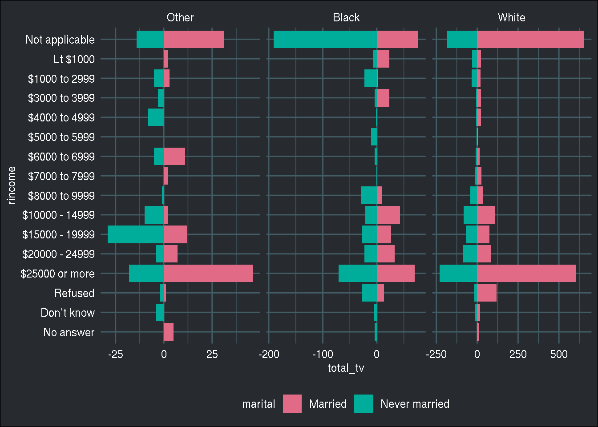
Happy Easter!